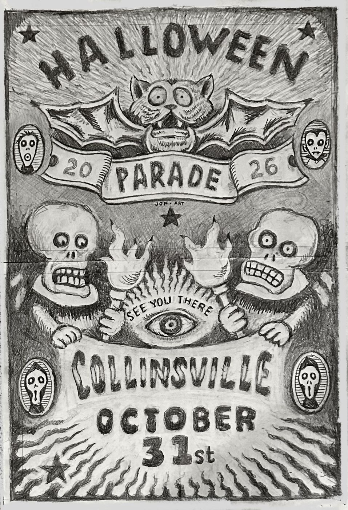
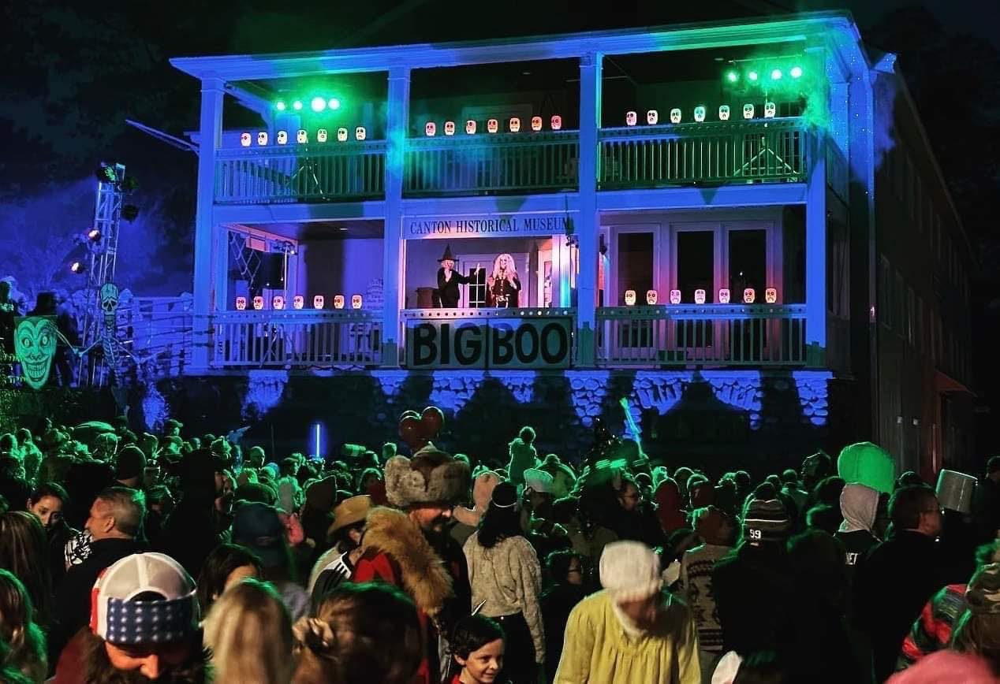

On Saturday, October 31, beginning at 6:00 p.m., the main streets in Collinsville will close to traffic and open to all who are brave and daring enough to join in the 33rd annual Collinsville Halloween Parade.
At 6:00 p.m., as the dusk takes over the village of Collinsville, from the balcony at the Canton Historical Museum, pre-parade antics kick off with the annual screaming procession, music, and CANDY!
At 7:00 p.m. the parade ritual begins on Main Street. The Phantom Organist’s haunting pipe organ sounds can be heard, and all those who are Halloween-donned follow the fog and music down Main Street and around The Green.
Judges of Doom will be searching for the scariest, most original, and funniest costumes of the night. There is also a screaming contest.
The parade starts on Main St. in front of the Canton Historical Museum. Village streets close to vehicles on parade night, so arrive early and park on the edges of town.
Route 44 West over Talcott Mountain through Avon into Canton. Pass Route 177 South, turn left at the next light onto Dowd Avenue, then continue about 2 miles into Collinsville.
Route 10 South to Route 44 West in Avon. Pass Route 177 South, turn left onto Dowd Avenue, and continue 2 miles into Collinsville.
Route 4 West to Unionville, continue on Route 4 West / 179 North about 2 miles past Unionville. Continue through the light, then 2 more miles, turn right at the stop sign, and cross the bridge into Collinsville.
Route 177 North to Unionville, cross the Farmington River, then turn left onto Route 4 West / 179 North. Continue two miles, through the light, then 2 more miles, turn right at the stop sign, and cross the bridge into Collinsville.
Route 202 East to Route 179 South, and follow it down into downtown Collinsville via the merge.

Parade night at the Canton Historical Museum balcony